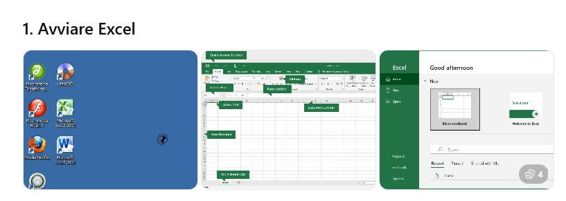
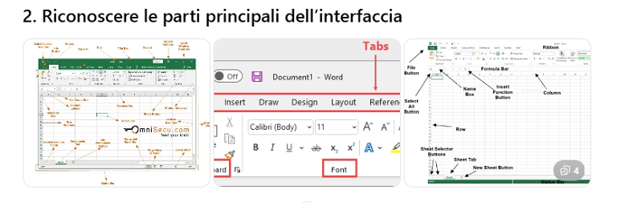
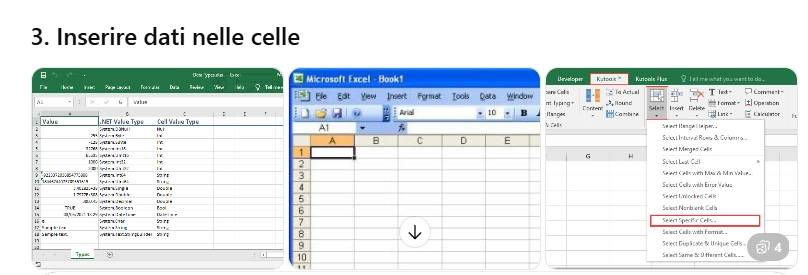

← Torna all'elenco Excel & VBA
Obiettivo dell'esercizio
Imparare a riconoscere e utilizzare gli elementi principali dell'interfaccia di Excel: la barra multifunzione, le celle, i fogli di lavoro e gli strumenti di base per organizzare i dati.
- Navigare tra le parti principali dell'interfaccia.
- Inserire e gestire dati elementari.
- Muoversi velocemente tra celle e fogli.
- Salvare correttamente il proprio lavoro.
1. Avvio e Primi Passi

- Apri il menu Start del computer.
- Digita Excel nella barra di ricerca e avvia il programma.
- Seleziona Cartella di lavoro vuota nella schermata iniziale.
2. Gli elementi dell'Interfaccia

Barra Multifunzione (Ribbon): In alto, contiene schede come Home, Inserisci, Formule. Ogni scheda raggruppa comandi specifici.
Barra della Formula: Fondamentale per vedere cosa c'è "dentro" una cella (testo o calcoli).
Celle: Ogni quadratino è una cella, identificata da una lettera (Colonna) e un numero (Riga), ad esempio A1.
3. Inserimento dei Dati
Proviamo a costruire una piccola rubrica inserendo i dati come mostrato in tabella:
| 1 | Nome | Età |
| 2 | Luca | 22 |
| 3 | Maria | 25 |
| 4 | Paolo | 19 |

Suggerimenti per la navigazione:
- INVIO: Ti sposta nella cella subito sotto.
- TAB: Ti sposta nella cella a destra.
- Frecce Direzionali: Per muoverti liberamente nella griglia.
4. Salvataggio del Lavoro
- Clicca sulla scheda File in alto a sinistra.
- Seleziona Salva con nome.
- Scegli la cartella di destinazione (es. Documenti).
- Assegna il nome "Esercizio Excel Base" e clicca su Salva.
Il file verrà salvato con l'estensione standard .xlsx.
Competenze acquisite: Ora sai come aprire un file, identificare le celle, inserire testi e numeri e mettere in sicurezza il tuo lavoro salvandolo sul PC.